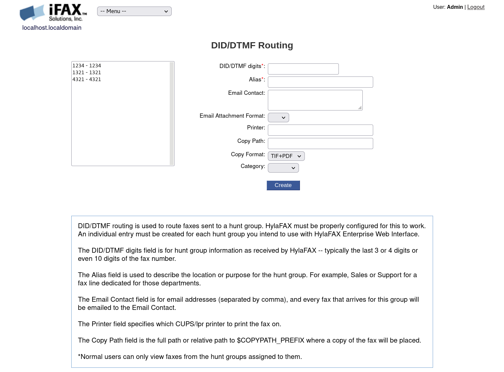

Configuring Inbound FAX Routing
Web Interface DID Routes:
Inbound FAX routing is easily configured the "Configure DID/DTMF Routing" section of the Admin Settings area in the Web Interface.

By default, there are three DID groups configured. They are 1234, 1321, and 4321. If a fax is sent to a non-existent DID group, then it will be stored in the “Catch-All” group.
The admin account has access to view all faxes received in every DID group including the “Catch-All” group.
The tech account only has access to view the faxes received on the 1321 and 4321 DID groups. The user account only has access to the 1234 DID group.
Therefore, if you send a fax to 4321, the users admin and tech will see the fax in the Inbox while user will not.
If you send a fax to 2175, only admin will be able to view the fax because it will be stored in the “Catch-All” group.
You can create new DID groups and adjust user permissions in the Admin Settings area.
Fax Dispatch
If you'd like to perform an action (e.g. execute a script) when a fax is received, that can happen on in FaxDispatch
FaxDispatch is sourced by bin/faxrcvd, which is executed by btgetty. Here are some things you can do with it:
-
Email routing by CallerID, by DID, or by receiving device (example case statements for each type of routing are included). FaxDispatch sets the SENDTO variable in order to route faxes to emails. Similarly it sets FROMADDR.
-
Sending the fax attachment as different types (i.e., TIFF instead of PDF) FaxDispatch sets the FILETYPE variable to pdf,tiff to manage this. Or to "none" to not attach anything at all. Or you can use TIFF instead of PDF for a specific destination, see below.
-
Automatic printing
- Copying faxes to different directories (this is good for those who want backups or to send faxes to a different network share
- Adding faxes to the web interface.
- Set the TEMPLATE variable (or in FaxDispatch, add the variable, as it starts out not included in the file), to specify which email templates are used for notification
Fax to Email using FaxDispatch
By default your server will have the following examples in its FaxDispatch file. You can see examples of how to route your emails based on the Caller ID $CALLID1 or the DID Route $CALLID2 or the device the fax was recived on $DEVICE
When using multiple analog lines, you can determine which port the fax number is connected to by running watch faxstat and then calling the fax numbers with your phone.
FROMADDR=faxserver@example.com
FILETYPE=pdf
# By CallerID
case "$CALLID1" in
2125551234) SENDTO=jack@example.com,jill@example.com;; # send to both jack and jill
2125553456) SENDTO="joe@example.com"; FILETYPE=tif;; # joe wants TIFF instead of PDF
*) SENDTO=catchall@example.com;; # send everything else here
esac
# By DID/DTMF
case "$CALLID2" in
6001) SENDTO=jack@example.com,jill@example.com;; # send to both jack and jill
6002) SENDTO="joe@example.com"; FILETYPE=tif;; # joe wants TIFF instead of PDF
*) SENDTO=catchall@example.com;; # send everything else here
esac
# By Device
case "$DEVICE" in
ttyS4) SENDTO=john@example.com;; # all faxes received on ttyS4
ttyS5) SENDTO=mary@example.com;; # all faxes received on ttyS5
ttyS6|ttyS7) SENDTO=will@example.com;; # all faxes received on ttyS6 and ttyS7
esac
Copying the FAX to a local directory
To copy a fax in PDF format to another directory:
DATE=$(date +%Y/%m)
TIFF2PDF=/usr/bin/tiff2pdf
SHAREDIR=/media/smbshare
if [ -f $FILE ]; then
mkdir -p $SHAREDIR/$DATE
# cp $FILE $SHAREDIR/$DATE/$FILENAME.tif
# Copy the fax with filename format DID-FILENAME.pdf
$TIFF2PDF -o $SHAREDIR/$DATE/$CALLID2-$FILENAME.pdf $FILE
fi
Note about copying faxes:
If you want to back up every received fax, ideally your remote machine would connect to a Samba share on the HylaFAX server, instead of configuring the HylaFAX server to connect to and store faxes on a remote share because of eventual networking problems that might cause some faxes to not be copied over to the remote share.
We recommend your systems pull from the HylaFAX server for an important reason: so that HylaFAX is guaranteed to be able to invoke all post-reception routines successfully, without reliance on external systems or file storage. HylaFAX's faxrcvd script only runs once, when the fax is received. If your remote filesystem was not mounted at the time it was run, the fax would fail to get copied over, and there would be no indication of any failure. So at least the very first copy HylaFAX does should be local.
*Add link to Samba setup guide
Using LDAP/AD
Connection to LDAP server must be set up first! See guide below for instructions:
*Create a link to the LDAP doc
Route the fax to email based on the DID listed for users in LDAP (or Active Directory):
LDAPEMAIL=`ldapsearch -LLL -x -D "CN=Fax Server,OU=System Accounts,DC=Example,DC=com" \
-y /etc/ldap.secret "facsimileTelephoneNumber=*$CALLID2" mail | grep "^mail:" | \
cut -f 2 -d ' ' | awk '{ str1=str1 $0 "," }END{ print str1 }'`
if [ -n "$LDAPEMAIL" ]; then
SENDTO=$LDAPEMAIL
fi
You must update the LDAP connection parameters (ie: LDAP host, BaseDN, etc) in the command above.
Printing Received Faxes
Printing Received Faxes To install the CUPS print queue software, run:
yum -y install cups system-config-printer
systemctl start cups
cupsctl --remote-admin
Edit /etc/cups/cuspd.conf and add this as the first line:
DefaultEncryption Never
Under <Location /admin>, remove the line:
Encryption Required
If the HylaFAX server is not located on your same network, you must also execute the following command:
# sed -i -e 's/Allow @LOCAL/Allow All/' /etc/cups/cupsd.conf
Restart CUPS
# systemctl restart cups
Allow connections to CUPS through the local firewall:
# firewall-cmd --zone=public --permanent --add-service=ipp
# firewall-cmd --reload
Afterwards, you can access the CUPS web interface by pointing your browser to port 631 of your hylafax server’s IP address.
For example: http://192.168.1.10:631
*Add screenshot
To add a printer, click on the Add Printer button and follow the prompts. CUPS will request that you
login with the root account and the root password you specified during the Appliance installation.
To print faxes as they arrive, add the following to etc/FaxDispatch:
PRINTER=myprinter
fax2ps $FILE | lpr -P$PRINTER
Substitute myprinter for the actual printer name configured on your server.
Barcode Decoding
Barcode support is provided by the bardecode application located at /var/spool/hylafax/bin/bardecode. Supported barcode types include code39, code128, upca, upce, ean8, code25, ean13 and codabar.
Example usage:
bin/bardecode -t any -f $FILE
Execute bin/bardecode for more information